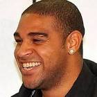

|  | Adriano |
| Gender | Male |
| Ethnic | Brazilian |
| Job | Brazilian Footballer |
| Desc | For so long, it seemed like Brazil had life after Ronaldo sorted with Adriano ably waiting in the wings. Dubbed ‘The Emperor’ by Inter Milan fans, Adriano was the most exciting Brazilian to emerge on the scene since, well, Ronaldo. A decidedly different striker, Adriano was all about strength and power rather than agility and finesse, but he remained a potent goalscoring force. His finest performances for Brazil came while Ronaldo was still an active part of the Selecao’s plans. There were the seven goals at the 2004 Copa America which saw him land the Golden Boot while Brazil took home the trophy. A year later he was at it again, landing the Golden Boot at the 2005 Confederations Cup, where he scored five goals. |
Affiliation
| Org | Brazil National Team |
| Club as Player | Atletico Paranaense |
| Inter Milan |
Relationship
| Agent | Gilmar Rinaldi |
2008 10 31 Retrieve
[Brazilian striker Adriano has sensationally been sacked by Inter Milan as punishment for leaving a number of rude messages on coach Jose Mourinho’s answer phone] Internazionale would like to announce that they have parted company with Adriano Leite Ribeiro following a most unfortunate incident involving him and Jose Mourinho. We have no more to add on this matter at this time
2011 03 17 Retrieve
[Adriano Hits Back At Flamengo Coach Vanderlei Luxemburgo] I was disappointed [with how Luxemburgo handled the situation]. Vanderlei has always praised me, saying that I was a player he would always want in his squad. Now, I get here and hear him talking about these things. Maybe it’s a misunderstanding, maybe he has his problem. I understand everybody, I’m not here to judge anyone, that’s not who I am. I want to help, be a part of the squad and his work. I’m waiting, but there’s a limit
2014 02 28 Retrieve
[Adriano says Real Madrid hold no fear for Barcelona] Real hold no fear [for us]. They scored six goals, which is not easy, although people may say Schalke are not at the same level as Madrid. We also played very well against [Manchester] City [in the Champions League] when people doubted us. So, we have to be united and carry on doing what we know, which is playing football, and hopefully things will continue to go well. Of course I’m looking forward to it. But the first thing I have to do is play well for Barcelona and then, of course, think about the World Cup with my country
2014 12 26 Tweet
[The 32-year-old striker used Twitter to announce the move, wishing Le Havre fans a Merry Christmas] A Merry Christmas to my new fans of Le Havre. Very happy to be with you for a new sporting challenge !!!
2016 03 11 Retrieve
[Adriano says his weight will not be a problem at Miami United] I am very well. Obviously, I will still have to work hard to get back to being the Adriano I was before. But I only need a slight physical improvement to be on the pitch. Before, I was out of weight when I returned. Now, I don’t think this will be a problem. I still don’t have date for when I will play, we are going to have a meeting to set that, but I believe that next week I will be ready to go to the field. I missed everything; the fans, the joy, the happiness of scoring a goal. But now I’m getting a good opportunity to return. I want to show my potential and be a champion win the Miami United shirt
2017 08 10 Retrieve
[Adriano on his dringking problem] The death of my father left a huge hole. I felt alone and I isolated myself when he died. I was sad and depressed in Italy, and that was when I started to drink. The death of my father left a huge hole. I felt alone and I isolated myself when he died. I was sad and depressed in Italy, and that was when I started to drink
2017 10 14 Retrieve
[Adriano tells about his plans to return to football] I’m preparing myself for a new project, I’ll be back in training in January. Without a club. Ever since I stopped, I have succeeded in maintaining my shape. I want this and I know I’ll have to persist. I want do this for myself, I want to show I can reach my limits so I can tell if I can play or not. I couldn’t complete my career as a whole. Something’s happened and pushed me away from football. I can say [my career] stopped at the half
2019 04 06 Retrieve
[Former Camp Nou team-mate and fellow Brazilian Adriano says Neymar regrets Barcelona exit more than anybody] I spoke with Neymar three weeks ago. Everyone who has played for Barcelona and left has regretted it and I think, for him, even more so than most
My arrival at Barcelona was one of the most important moments in my career. I won a lot of trophies